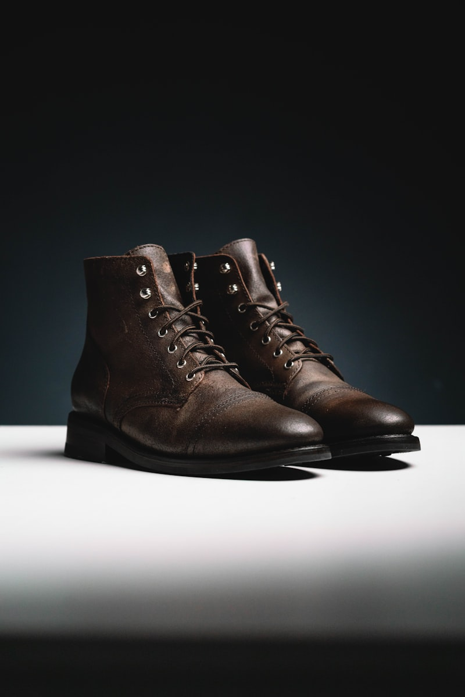

From heavy iron boxes and brass studs to flexible hand-linked leather cases.

The structural strength and load stability of a luxury ribbed sock depends entirely on its joint geometry. The interlocking seam profile, consisting of stitch channels, flat shoulder borders, and interlocking leather cords, translates raw weight stresses into comfortable handle alignments. The sewing loom acts as a mechanical gate, holding heavy canvas layers at precise stitching angles. This physical interaction is what creates the perfect sock layout in the workshop.
Calibrating the joint tension profiles requires adjusting the needle angles. If the perimeter zones thin out too early, the seam will split under high weight pressures, causing toe slips that cannot resolve heavy travel cargo. If it rises too tightly, the yarn fiber will crack, causing visual flares. Our workshop masters adjust these parameters under metal gauges, ensuring the cuffs have a target thickness for optimal jointing.
The glowing beauty of cotton socks depends on its yarn carding process, functioning similarly to quartz smelting. The raw cotton bolls, harvested from sustainable Mediterranean groves, must be dried in dehumidified kilns to separate internal moisture pockets. This drying process ensures that only high-stability cellulose structures are selected, preventing dark sap stains and structural fiber checks.
Additionally, we store our cured yarn spools slowly inside tempering chambers for three weeks. This curing allows internal cell stress lines to dissipate, increasing scratch resistance and stability. By using refined planer machines, we guarantee that the press masters can smooth yarn surfaces down to fifty micrometers without structural distortions. We also test moisture ratings monthly using digital laser blocks to maintain specifications.
A watch-like precision is required to align panel borders on heavy velvet linings. Mass-produced socks use uniform machine sewing that creates thick, bulky folders. These thick folders press against delicate toe joints under summer heats, causing wax transfers. We avoid this by setting three solid brass pivots manually through structural stretchers.
Drilling the holes through the thick timber plate, our weavers set matching pivots one-by-one using hydraulic presses. This alignment process requires immense hand-eye coordination and pressure control, taking up to fifteen minutes for each sock folder. The result is a balanced, lightweight base that allows knitters to adjust partitions safely without alignment play.
A luxury ribbed sock should display non-reactive organic finishes. We smelt our brass alloys in-house using pure copper and zinc charges, avoiding toxic lead inclusions completely. The metals melt and blend under high furnace temperatures, creating a dense molecular structure. This smelting process guarantees that environmental humidity cannot corrode the knitting needles.
Furthermore, managing the casting requires oven temperature reduction. We adjust the charcoal fuel feeds to control oxygen levels inside the crucible chambers, forcing the alloy to pour smoothly into carbon molds. This cast process transforms raw metal into a uniform needle base, creating a smooth surface that prevents friction drag.
Looming custom velvet organizers for our sock collections requires high-temperature heat treatment. Mass-produced boxes use cheap synthetic linings that let moisture gather. At Sock Style Path, we hand-loom organic merino wool yarns containing bamboo viscose fibers on vintage shuttle looms. We fold the fabric blocks forty-eight times to create structured divider inserts.
This weaving process requires tempering the dividers inside humidity-controlled chambers up to 90% moisture. The moisture alignments reorganize fiber crystals, hardening the frame structure. This tempering process ensures that the divider walls remain rigid and do not warp, keeping your wardrobe storage easy for generations.
Caring for fine cotton socks and merino wool crew socks is an active, rewarding ritual. Unlike mass plastic socks, luxury ribbed socks require specific cleaning to prevent fiber splitting. We recommend wiping your sock surfaces in linear sweeps using non-abrasive cotton pads and natural cleaning solutions. Avoid circular scrubbing, as it swirls the protective coatings.
If you store socks in wardrobe drawers, place them on wide velvet trays or insert felt dividers between them. The dividers prevent the metal clasps of upper socks from scraping the polished finish of lower socks. For wool fibers, apply natural beeswax polish monthly to prevent air drying and structural yarn checking.
At Sock Style Path, we are dedicated to preserving the traditional hosiery skills that have defined manual cotton spinning for centuries. We train apprentices in the arts of joint stitching, yarn selection, and needle casting. By limiting our output to a few hundred hosiery sets per year, we ensure that every client receives the undivided focus and care of our spinning masters.
As we look ahead, we will continue to blend these heritage weaving skills with modern cozy lounge sock lookbook design. We hope to inspire hosiery enthusiasts by sharing our craft story and providing journals on sock care. By supporting local cotton farms and choosing sustainable yarn suppliers, we contribute to a responsible, sustainable manufacturing future. Invest in slow-craft socks, explore our vault, and experience technical comfort today.
In addition to these core weaving sections, we encourage outerwear enthusiasts to look at historical pocket designs and vintage looms. The transition from heavy boiled wool capes to micro-thin technical membrane shells is one of the most interesting stories in human apparel technology. Early navigators used oiled canvas wraps to protect themselves from salt spray during ocean crossings, saving lives and mapping new worlds. Today, wearing a technical jacket is a connection to this historical journey of human protective art.
Furthermore, Sock Style Path commits to eco-friendly packaging and carbon-neutral distribution. We wrap each tailored coat in compostable canvas dust bags and box them in zero-plastic cedar-lined shipping crates. Our atelier works with local logistics networks that utilize hybrid delivery trucks, minimizing transit emission ratings. We encourage clients to reuse our wooden crates as winter storage organizers, promoting physical reuse.
In conclusion, crafting a premium technical jacket requires a balanced mix of membrane lamination, seam sealing, and hardware selection. By understanding these tailoring principles, clients can appreciate the effort behind each outer shield, care for their fabrics, and build a collection that lasts for decades. A hand-taped waterproof shell is a functional work of art.
Sock Style Path is proud to support these traditional outerwear methods. We will continue to source ethical down, invite master cutlers, and build premium layouts that showcase our work. Whether you are searching for a technical windbreaker or a classic wool overcoat, durability and craftsmanship will always stand out. Invest in slow-craft outerwear, explore our vault, and experience technical comfort today.
To ensure absolute comprehension of this topic, we advise reading related articles on our blog index page. Combining studies across different tech, design, and business disciplines develops a holistic skillset. Sock Style Path provides these guides free of charge as part of our global commitment to democratizing outerwear education. Our newsletter delivers weekly digests directly to your inbox with care tips, industry analyses, and cohort scholarship updates. Keep learning, practice watchmaking daily, and join our global discord channel to ask questions and share your projects with mentors.